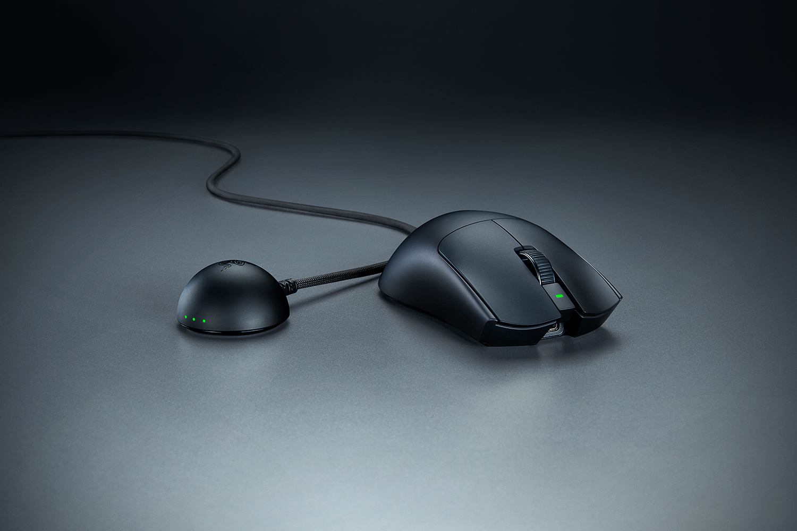

เกมมิงเกียร์ในคอลเลกชันของ raf3
10 OBJECTS / 4 CATEGORIESObjects
of play.
รวมเมาส์ คีย์บอร์ด แผ่นรองเมาส์
และหูฟังที่เลือกเก็บไว้ในคอลเลกชัน

001 — RAZER VIPER V4 PROดูรายละเอียดThe collection(10)
อุปกรณ์ทั้งหมดในคอลเลกชัน
Behind
the collection.
raf3 museum คือพื้นที่รวมเกมมิงเกียร์ส่วนตัว ตั้งแต่เมาส์และคีย์บอร์ด ไปจนถึงแผ่นรองเมาส์และหูฟัง
ตอนนี้มีทั้งหมด 10 ชิ้น แบ่งเป็น 4 ประเภท โดยมี Razer Viper V4 Pro เป็นชิ้นโปรด
ภาพประกอบจากผู้ผลิตและร้านค้า ดูแหล่งที่มาได้ในรายละเอียดของแต่ละชิ้น